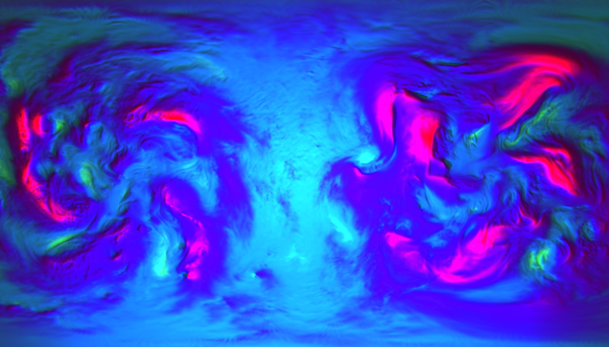
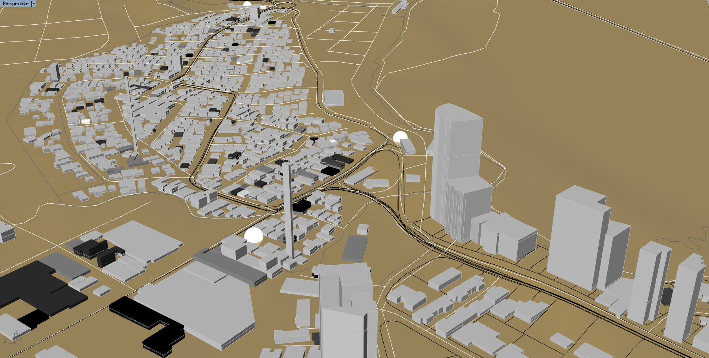
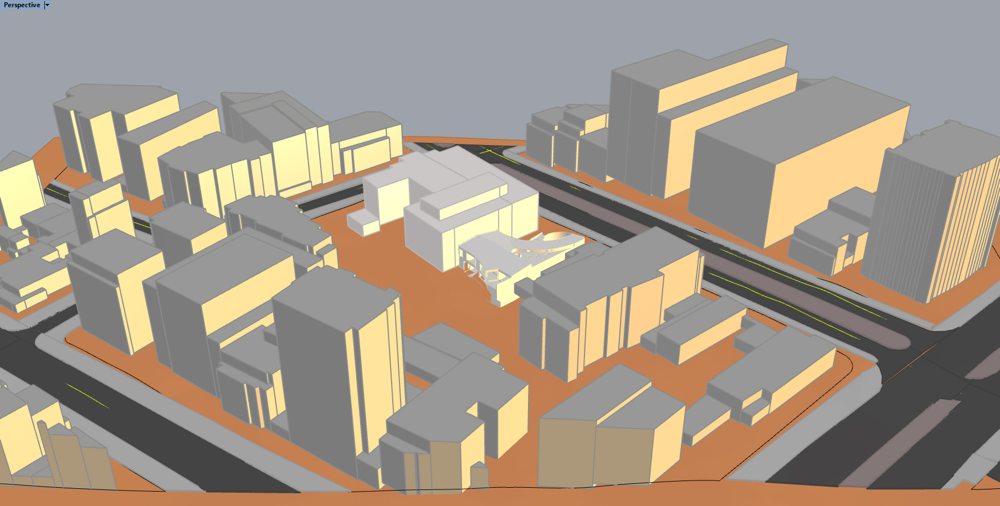
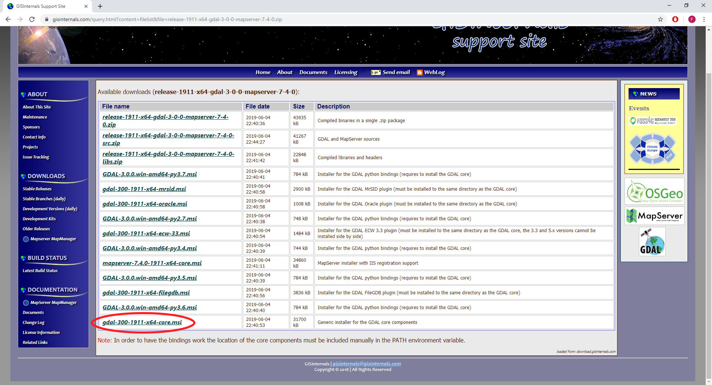
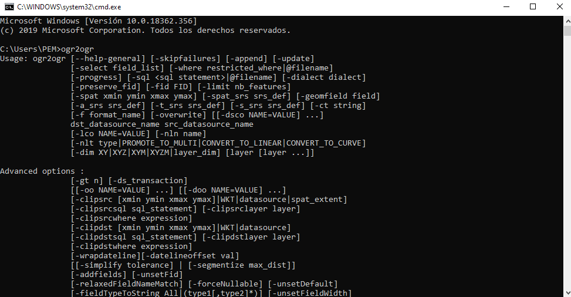

Felipe Gutiérrez
Programmer/Creative
Los SIG (Sistemas de Información Geográfica) según Wikipedia permiten capturar, guardar, manipular y modelar datos del
mundo real que se encuentran geo-referenciados. Las herramientas SIG permiten al usuario encontrar relaciones entre distintas fuentes de datos, tarea que de otra manera puede ser poco intuitiva y en algunos
casos imposible.
Estas herramientas son utilizadas por arquitectos, economistas, geologos, artistas, ingenieros, biologos, especialistas en mercadeo, entre otros.
Pueden ser usados para la predicción y visualización del clima, la predicción del crecimiento urbano, la creación de modelos urbanos o constructivos, incluso para crear arte cuyo propósito sea concientizar.
Velocidad del viento, proyección esférica
 Imagen producida en Rhinoceros3d mediante el plugin de Grasshopper GHopperGIS (desarrollado para PEM) y visualizada a
través de Tarsier
Imagen producida en Rhinoceros3d mediante el plugin de Grasshopper GHopperGIS (desarrollado para PEM) y visualizada a
través de Tarsier
Esta imagen es la visualizacion de datos extraidos de un archivo grib proveniente de la NCEP.
Velocidad del viento, proyección Web Mercator

Imagen renderizada en RedShift para Houdini, malla proveniente del mismo proceso de la imagen anterior.
Vista 3D de Panamá Vieja

Mediante la extracción de datos del portal GEO MUPA, OpenStreetMap y de
ALOS-2 se construye un modelo tri-dimensional que contiene edificios de acuerdo a usos, terreno, vías, parques, normativa, barrios y áreas protegidas
Vista 3D de calle 82 con 7a y sus alrededores (Bogotá)

Imagen del viewport de Rhino3d
Vista 3D de calle 12c con 4a y sus alrededores (Bogotá)
 Imagen del viewport de Rhino3d
Imagen del viewport de Rhino3d
Colombia, en especial Bogotá tiene un excelente repositorio de datos abiertos, en el que se puede encontrar información de edificaciones, vías, andenes,
separadores, cotas de nivel, entre otras.
A partir de esta información ha sido fácil construir modelos de contexto para diferentes proyectos.
Tanto el plugin (GHopperGIS) como otras operaciones aplicadas en los proyectos mencionados se basan en una biblioteca Open Source llamada
GDAL.

La biblioteca provee un modelo unificado para manejar datos de tipo raster (a través de GDAL) y datos de tipo vector (a través de OGR). GDAL incluye tanto "bindings" para lenguajes de programación (C++, C, C#, Python, entre otros) como utilidades de traducción de formatos y procesamiento de datos para la consola. Es utilizada por Google Earth, ArcGIS, entre otros.
Para instalar GDAL como herramienta de consola para Windows:
Entrar a GISInternals.
Escoger de acuerdo a arquitectura y compilador (sí no se sabe y el computador es relativamente nuevo: Compiler: MSVC 2017, Arch: x64).
Entrar al link que está en la sección de Downloads.

Buscar con Control-F: "Generic installer for the GDAL core components."

Bajar y instalar con configuración: Typical.

Bajar el archivo batch, ejecutarlo
(click derecho, mostar en carpeta, una vez en la carpeta click derecho "Ejecutar como Administrador"). Va a aparece el mensaje "Windows
protegió su PC", clickear en Más información
Clickear "Ejecutar de todas formas".
El archivo .bat va a agregar los "paths" a las variables de entorno de Windows para que se pueda correr desde la consola GDAL.
La consola va a abrirse y va a preguntar por la arquitectura, en este caso es 64, pero puede ser 32. De acuerdo a la versión de
GDAL escogida previamente escribir en la consola: 64 o 32. Dar enter.
Abrir una consola nueva y escribir: ogr2ogr. Dar enter

Debería aparecer un mensaje como el anterior, de lo contrario GDAL no está instalado correctamente.
Bajar el zip que contiene el plugin, descomprimir (click-derecho y click en la opción "Extraer todo..."),
entrar a la carpeta GHopperGIS y doble-click en el ejecutable "GHopperGISInstaller.exe".
Va a aparece el mensaje "Windows protegió su PC", clickear
en Más información
Clickear "Ejecutar de todas formas"
El "path" a la carpeta donde se encuentran las bibliotecas de Grasshopper debería ser el correcto, pero no sobra verificar. Sí no es el "path"
correcto cambiarlo.
Para verificar que el plugin funciona, correr Rhino3d abrir Grasshopper y buscar por la pestaña del plugin "GHopperGIS" (o haciendo doble-click
y buscando "GetDrivers") el componente "GetDrivers", conectar al input un booleano en True y verificar que salga una lista de los drivers de
GDAL.
{kind=link}
{kind=link}
{kind=link}